NeurIPS 2026Conference on Neural Information Processing Systems · Sydney
Neural Compression of Long ADMM Trajectory for Multiparametric Quadratic Program
1Department of Civil and Systems Engineering, Johns Hopkins University
2Department of Automation, Tsinghua University
Solving a multiparametric quadratic program in real time can take thousands of ADMM iterations, and none of that work carries over to the next instance. TQPNet learns to compress the whole trajectory into a small ReLU network that emits a primal-dual warm start, followed by a handful of unrolled ADMM(ReLU) layers. The network is trained on the KKT residual alone, with no solver labels, and that same residual certifies every answer online and triggers extra refinement only where it is needed.

7×
faster than OSQP at n+m = 2800
On MPC-structured QPs TQPNet with K = 10 layers holds about 1.3 ms across nine scales while OSQP grows from 0.03 ms to 13 ms. Crossover at n+m = 875, same closed-loop tracking error.
4096
robots per batched solve
Quadruped MPC at 50 Hz in Isaac Gym, 192 variables and 384 constraints per robot, all solved concurrently in one control cycle. Trained in under five minutes on one RTX 3080.
0
solver labels
The loss is the KKT residual of the QP itself, so training only needs sampled parameters. Offline cost drops below the supervised pipeline for n+m ≥ 2100.
1.8×
fewer iterations to 10-7
On n = 100, m = 200 random mpQPs the learned warm start cuts the 4729 cold-start ADMM(ReLU) iterations to 2778, and every answer ships with its residual certificate.
The problem
Model predictive control, differentiable control layers and reinforcement-learning pipelines all solve the same convex quadratic program over and over. The Hessian and the constraint matrix stay fixed; only the linear terms move with a parameter \(p\) such as the current state, the reference and the contact schedule:
Each instance is cheap on paper, yet a first-order method started from scratch needs thousands of iterations to reach a tight optimality tolerance. On a modest instance with 100 variables and 200 constraints, low-dimensional ADMM(ReLU) needs 4729 cold-start iterations to reach a KKT residual of \(10^{-7}\), and nothing it learned about one parameter transfers to the next. The existing shortcuts each give something up.
Online solvers
Interior-point, active-set and first-order solvers certify their answer, but they do no offline work, so every instance pays the full iteration count, and their sequential structure does not batch on a GPU.
Explicit MPC
Precomputing the piecewise-affine solution map gives instant lookups, but the number of regions explodes: 3123 regions and 4.1 ms already at n+m = 140, and infeasible beyond n+m = 315.
Supervised proxies
A network regressed on solver labels is fast, but it needs a solver call for every training point, carries no certificate, and degrades silently under distribution shift.
TQPNet
TQPNet keeps the optimizer in the loop and makes it learnable. A ReLU multilayer perceptron maps the parameter to a primal-dual pair \((x_0, \beta_0)\), and a fixed number \(K\) of unrolled ADMM(ReLU) layers refine it. Offline, the whole stack is trained end-to-end on the residual of the QP's optimality conditions over sampled parameters. Online, the same residual is checked per instance; whenever it exceeds the tolerance, more ADMM(ReLU) layers run on that instance until it passes.
Low-dimensional ADMM
A new splitting iterates directly on the primal-dual pair \((x, \beta)\) instead of the usual \((x, z, u)\) with the auxiliary variable \(z = Ax\). Each iteration costs \(O((n+m)^2)\) rather than \(O((n+2m)^2)\), and it converges faster in practice.
ADMM(ReLU)
One iteration of that scheme is exactly an affine map followed by a ReLU on the multiplier. It is therefore a neural-network layer: differentiable, batch-parallel on a GPU, and stackable behind an MLP.
Residual as loss and certificate
The KKT residual bounds the distance to the solution set, so minimizing it trains the network without labels, and thresholding it online certifies each returned solution.
One ADMM iteration is one ReLU layer
Eliminating \(z\) from the standard ADMM for the QP leaves an update that touches only \(x\) and the multiplier \(\beta\), and the projection onto the nonnegative orthant is a ReLU:
where \(W_2\) depends only on \(Q\), \(A\) and the penalty \(\rho\), and \(b_2\) is affine in \(q(p)\) and \(c(p)\). The weights are derived, not learned, so the layer is an exact optimizer step. Stacking \(K\) of them behind the MLP gives the proxy
with \(\mathcal{N}\) an \(L\)-layer ReLU network of width \(M\). ReLU networks represent piecewise-affine maps with exponentially many regions, which is exactly the structure of the mpQP solution map that explicit MPC tries to tabulate.
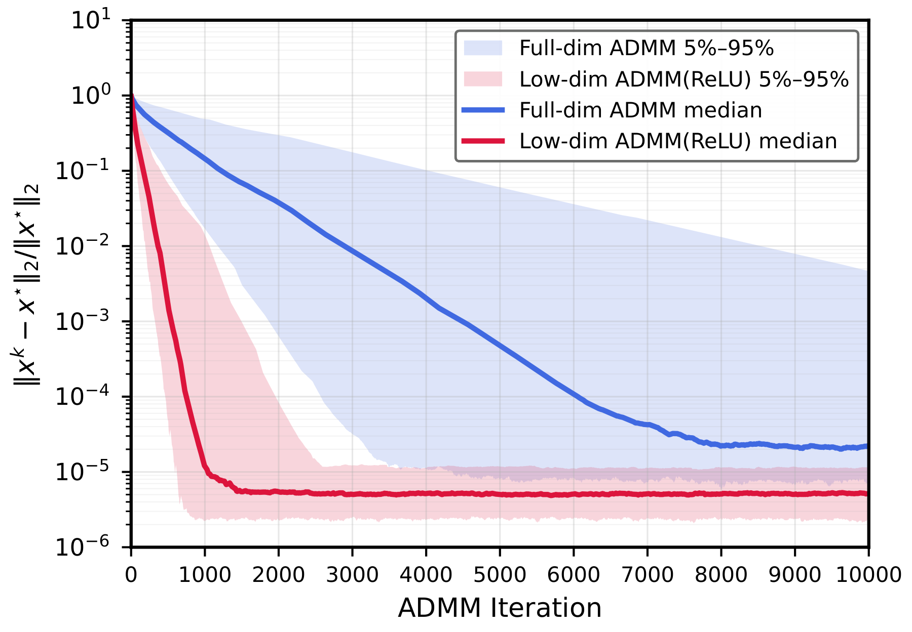
Self-supervised training and online certification
The optimality conditions of the QP define a residual on any primal-dual pair,
which vanishes exactly on the solution set \(\mathcal{S}(p)\) and bounds the distance to it. Training minimizes the residual of the full proxy over parameters sampled from \(\mathcal{P}\), with a logarithm to tame the many orders of magnitude across instances:
No OSQP call appears anywhere in training. The unrolling depth matters: back-propagating through ten or fewer layers mostly sees ADMM convergence noise and fails to compress, while 25 or more layers make training stable and let the warm start land where a few layers can finish. At inference the same residual is evaluated for every instance in the batch; instances above the tolerance \(\epsilon_{\mathrm{on}}\) get additional ADMM(ReLU) layers, so every returned \(x\) comes with a certificate and the dual \(\beta\) comes for free.
Results
All experiments ran on a single RTX 3080. The supervised baseline LQPNet shares the same MLP backbone but is regressed on OSQP labels; ADMM(ReLU) denotes the low-dimensional scheme started cold from \(x = \beta = 0\).
Compressing the trajectory
On random mpQPs with n = 100, m = 200 and 20 parameters, the depth \(K_{\text{train}}\) of the unrolled layers decides whether anything is compressed at all. Shallow unrolling stalls near a relative error of one; from 25 layers on, training converges and the trained warm start reaches a residual of \(10^{-7}\) in 1.7 to 1.8 times fewer iterations than a cold start.
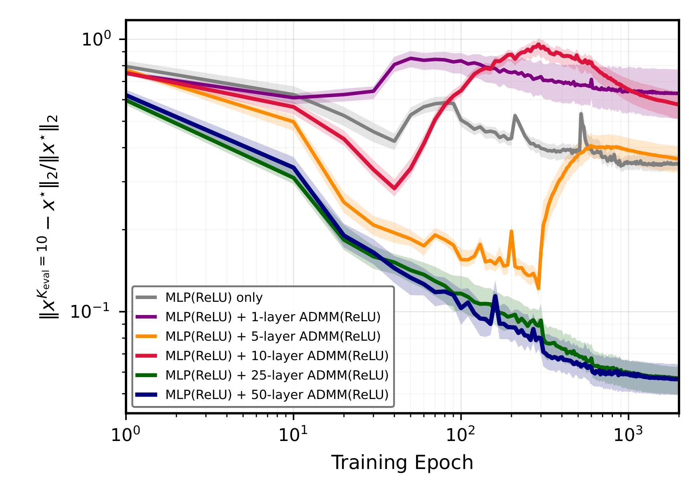
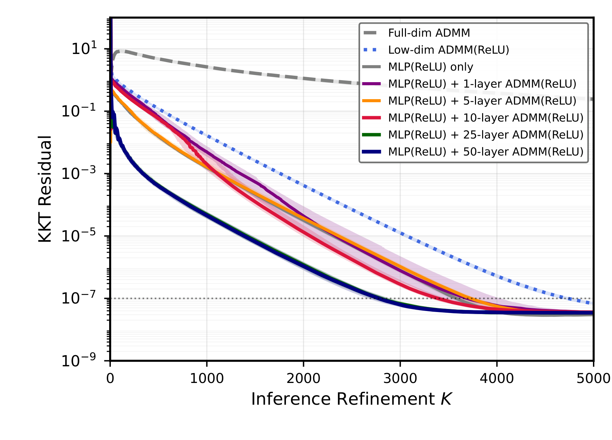
| Method | Iterations to 10-7 | Time (ms) | Speedup |
|---|---|---|---|
| Full-dimensional ADMM | > 104 | > 50.5 | — |
| Low-dimensional ADMM(ReLU), cold start | 4729 | 10.69 | 1.0× |
| MLP(ReLU) only | 3578 | 7.78 | 1.4× |
| MLP(ReLU) + 10-layer ADMM(ReLU) | 3392 | 7.31 | 1.5× |
| MLP(ReLU) + 25-layer ADMM(ReLU) | 2800 | 6.46 | 1.7× |
| MLP(ReLU) + 50-layer ADMM(ReLU) | 2778 | 6.03 | 1.8× |
Generalization under distribution shift
Both proxies are trained on parameters drawn from \(\mathcal{U}[-1,1]^{20}\) and tested on progressively shifted ranges. In distribution the supervised LQPNet is more accurate, but it needs an OSQP label for every training point and offers no certificate. Under shift the gap narrows monotonically, from 3.9× in distribution to 1.8× far out of distribution: training on the residual learns features that are more invariant to the parameter than direct regression on \(x^{*}\).
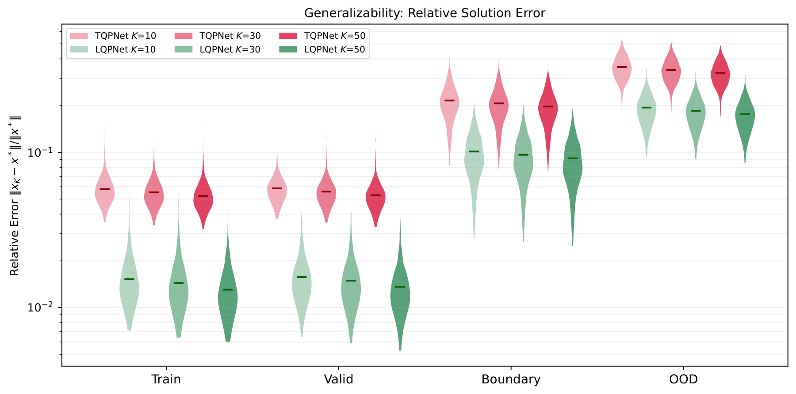
Scalability on MPC problems
Nine MPC-structured QP families from n+m = 60 to 2800 are run in closed loop for 200 steps. TQPNet with K = 10 keeps a near-constant latency of about 1.3 ms while OSQP grows from 0.03 ms to 13 ms; the crossover is at n+m = 875 and the speedup reaches 7× at n+m = 2800, with identical tracking RMSE and closed-loop cost. Explicit MPC built with MPT3 already needs 3123 regions at n+m = 140 and cannot be constructed beyond n+m = 315. Offline, label-free training becomes cheaper than the supervised pipeline for n+m ≥ 2100.
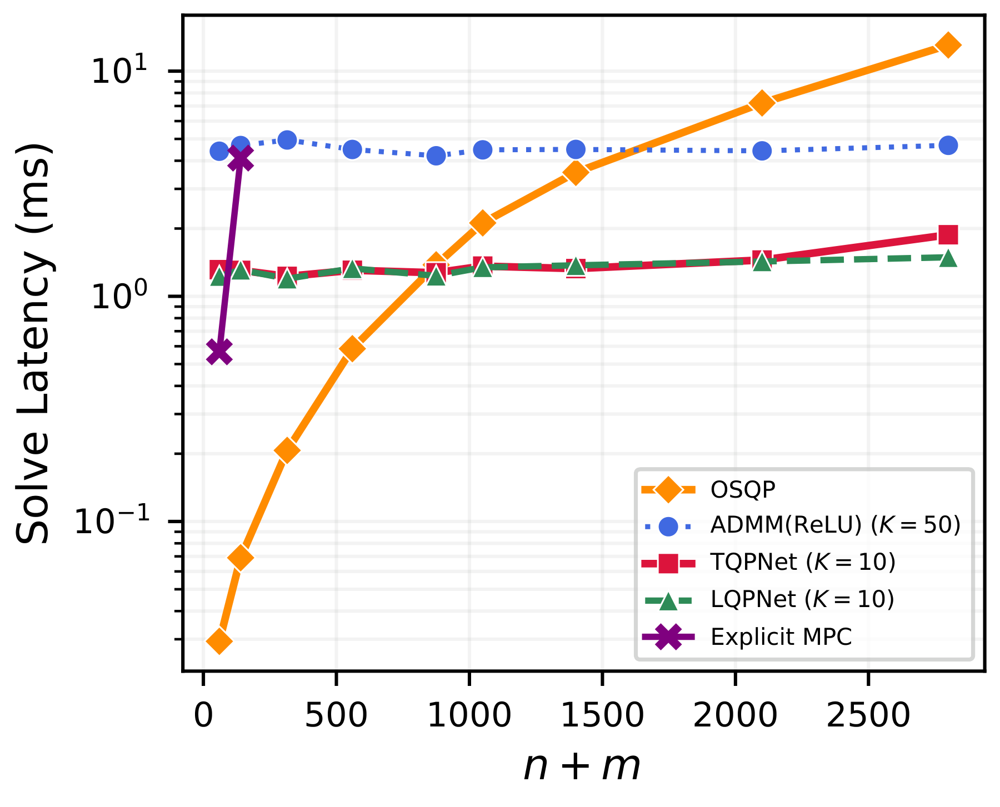
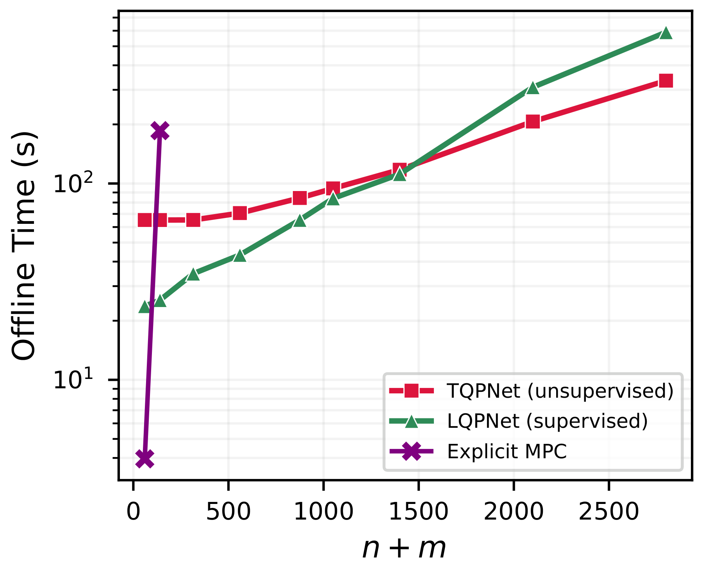
| n+m | OSQP latency (ms) | TQPNet latency (ms) | Speedup | Tracking RMSE (OSQP / TQPNet) | Explicit MPC (ms) |
|---|---|---|---|---|---|
| 60 | 0.03 | 1.31 | 0.0× | 0.221 / 0.221 | 0.57 |
| 140 | 0.07 | 1.30 | 0.1× | 0.218 / 0.218 | 4.11 |
| 315 | 0.21 | 1.23 | 0.2× | 0.217 / 0.217 | — |
| 560 | 0.59 | 1.31 | 0.4× | 0.263 / 0.264 | — |
| 875 | 1.38 | 1.27 | 1.1× | 0.217 / 0.217 | — |
| 1050 | 2.12 | 1.36 | 1.6× | 0.240 / 0.240 | — |
| 1400 | 3.55 | 1.33 | 2.7× | 0.198 / 0.198 | — |
| 2100 | 7.22 | 1.45 | 5.0× | 0.217 / 0.218 | — |
| 2800 | 13.06 | 1.88 | 7.0× | 0.225 / 0.225 | — |
Quadruped locomotion with 4096 robots
Convex MPC for a Unitree A1 runs at 50 Hz over a 16-step horizon; each control cycle is a QP with 192 variables and 384 constraints parameterized by 18 quantities such as body orientation, height, commanded velocities and the contact schedule. TQPNet is trained offline from sampled parameters only, in under five minutes on one RTX 3080, with no environment interaction and no solver labels. Deployed in Isaac Gym, every simulated robot is an independent QP instance, and all of them are solved in a single batched pass per control cycle.
The learned warm start is what makes the short refinement sufficient. Batch latency stays near constant until the GPU saturates, while qpth's interior-point solve grows with the batch. Against the OSQP optimum, TQPNet's cost error and constraint violation drop below \(10^{-2}\) within fewer than 20 refinement steps, whereas the cold-started ADMM(ReLU) needs more than 60 to reach the same accuracy.
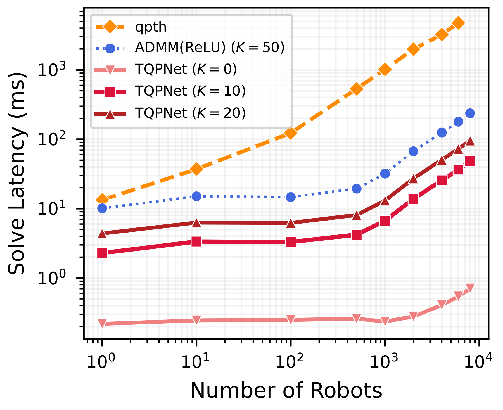
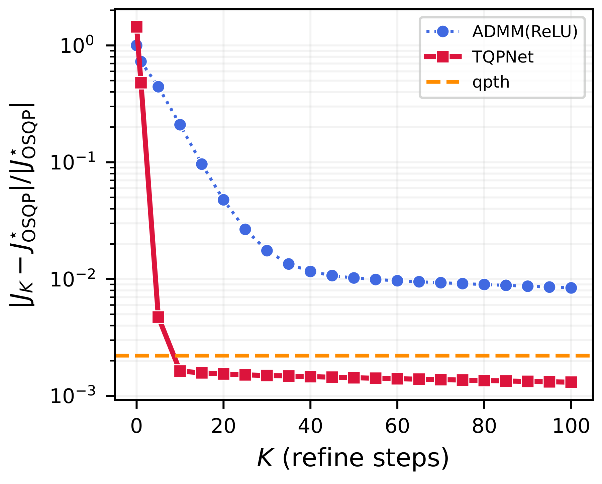
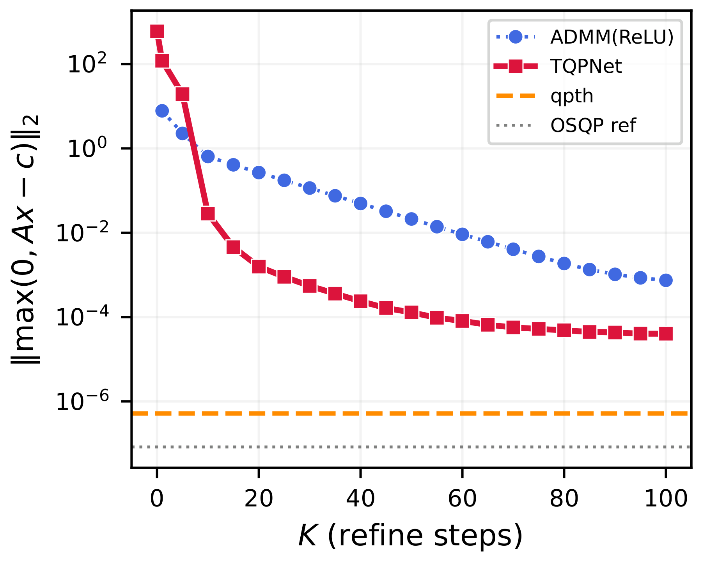
Quadrotor tracking with bounded latency
A single quadrotor tracks a lemniscate reference under MPC with a 25-step horizon (n = 100, m = 300) for 600 steps. All methods overlap at trajectory resolution and tracking errors are within the same magnitude as OSQP. The difference is the tail: OSQP's worst-case solve is 10 to 25 times its median because the iteration count varies from step to step, whereas TQPNet at fixed K has bounded execution.
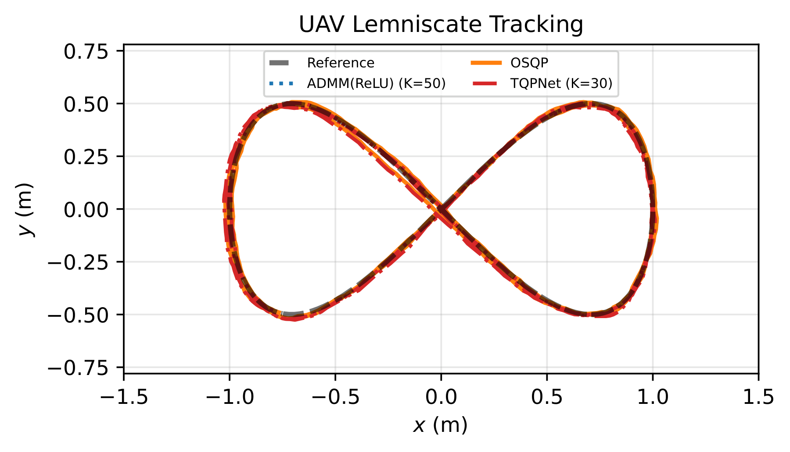
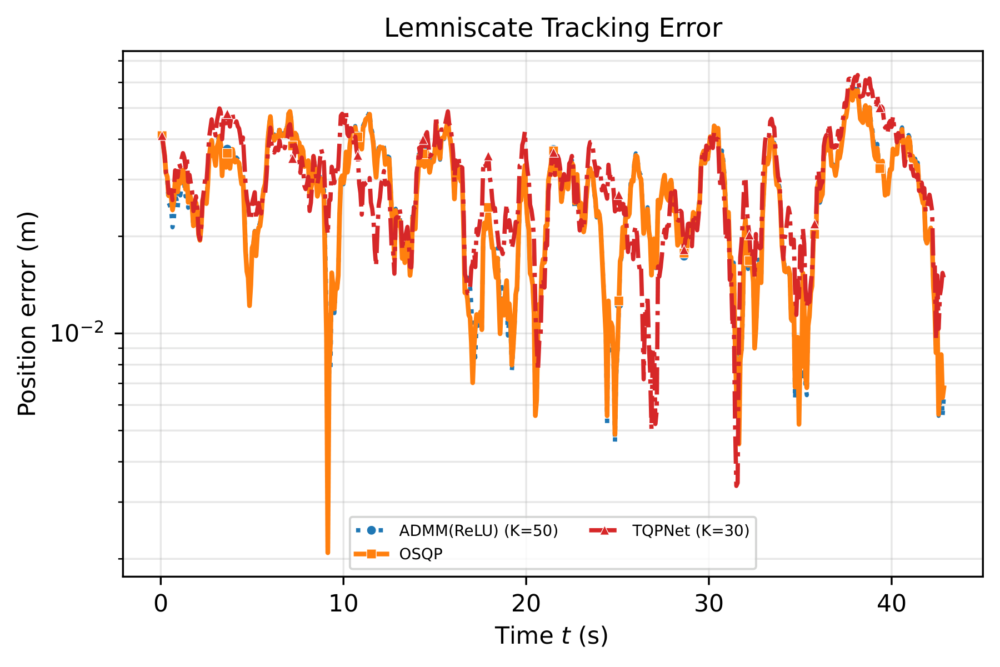
| Method | RMSE (m) | Latency median / max (ms) | Iterations median / max |
|---|---|---|---|
| OSQP (ε = 10-6) | 0.0273 | 0.73 / 7.03 | 50 / 450 |
| OSQP (ε = 10-8) | 0.0273 | 0.75 / 21.10 | 50 / 1500 |
| ADMM(ReLU), cold (K = 50) | 0.0306 | 5.84 / 13.05 | 50 / 50 |
| TQPNet (K = 10) | 0.0302 | 1.67 / 4.39 | 10 / 10 |
| TQPNet (K = 30) | 0.0297 | 3.90 / 10.66 | 30 / 30 |
Citation
@inproceedings{wu2026neural,
title = {Neural Compression of Long {ADMM} Trajectory for Multiparametric Quadratic Program},
author = {Wu, Liang and Zheng, Honghui and Yang, Bo and Yang, Xu and Mo, Yilin and Drgo{\v{n}}a, J{\'a}n},
booktitle = {Advances in Neural Information Processing Systems},
year = {2026}
}Conference page: NeurIPS 2026 · Code: github.com/SOLARIS-JHU/TQPNet · Questions: hzheng39@jh.edu